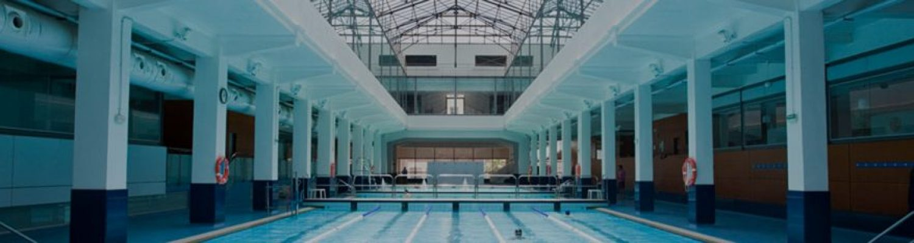
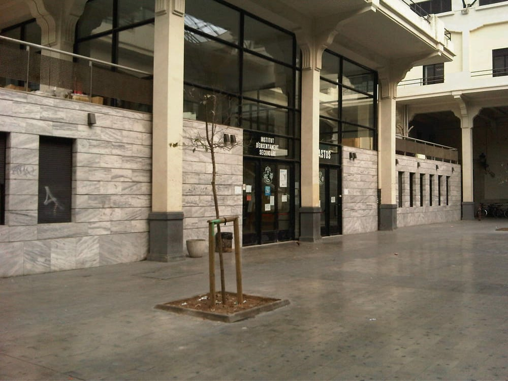

El Mercado de Abastos es un edificio ubicado en la ciudad española de Valencia. Se sitúa en el ensanche sudeste de la ciudad, entre las calles Alberique y Buen Orden, ocupando dos manzanas de la trama. Abarca una superficie de 23.800 m2, ejecutándose entre 1939 y 1948 como proyecto del arquitecto Javier Goerlich Lleó, contando con el impulso del entonces alcalde de la ciudad, Joaquín Manglano y Cucaló de Montull, barón de Cárcer.
En su origen se concibe como mercado de abastecimiento de mercancías, para lo cual se elige una zona perimetral de crecimiento urbano, aunque con el tiempo su emplazamiento quedará demasiado céntrico, teniendo que ser trasladado a la nueva periferia. Para su definición se propuso dotarlo de una gran cantidad de servicios, contando, además de los puestos de venta, con dependencias administrativas, peso público, oficina de especies gravadas, servicio de inspección veterinaria, estanco, cafetería, etc. programa con el que se considerará entonces uno de los mejores mercados de Europa.
Actualmente, Abastos cuenta con varios espacios diferentes, entre los que se encuentra uno de los centros deportivos más importantes de Valencia, el Centro Deportivo y Cultural Abastos Supera
El I.E.S. Abastos es un centro de educación secundaria, bachillerato y ciclos formativos de grado medio y superior situado en la calle Alberique nº 18 de Valencia, en las antiguas instalaciones del Mercado de Abastos de la ciudad. Dichas instalaciones albergan además un complejo cultural-deportivo, diversas oficinas municipales, una sede de la Universidad Popular y una Comisaría de Policía. Estamos situados en un enclave urbano privilegiado que cuenta con estupendas conexiones con el transporte público urbano: bus, metro, Valenbisi, etc. que facilita la llegada de los alumnos que vivan en otras zonas de Valencia o en su área metropolitana.